The SpreadJS Designer provides the "Remove Duplicates" option to permanently delete the duplicate data from the selected range. When you remove the duplicate data or values from the selected range, the only effect is on the values in the range of cells or table. Other values outside the range of cells or the table do not change or move.
When duplicate data is removed, the first occurrence of the value in the list is kept, but other identical values are deleted. SpreadJS provides the "Remove Duplicates" ribbon button under the "Data" > "Data Tools" tab group.
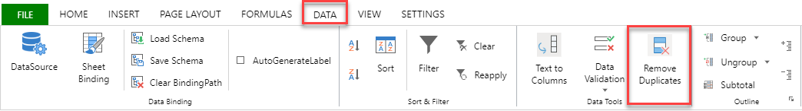
The following GIF illustrates the removal of duplicate data from the selected range of data.
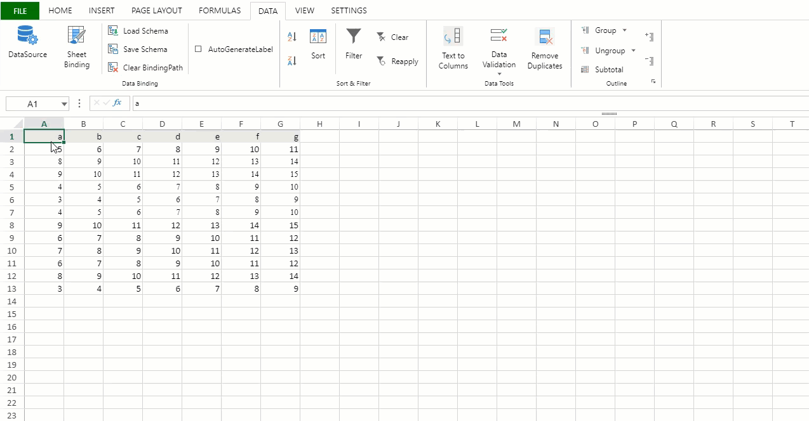
You can also choose to ignore the first row by selecting the "My Data has headers" checkbox option.
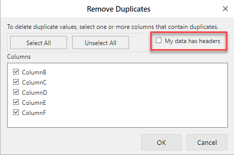
With Formulas
The formula in the cell subsequent to the duplicate cell is copied over. The following GIF illustrates the use of "Remove Duplicates" in the range of cells where a formula is applied for the Fibonacci series.
As observed, when the "Remove Duplicates" feature is implemented, it removes 'B3' and copies 'B4' to 'B3' and each next cell moves forward by one, changing "B3" to "=B1+B2".
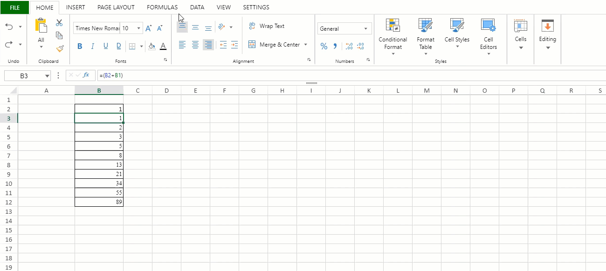
With Formatting
While using remove duplicates, formatting and style are not considered as different cells if their respective value is same as that of other cells in the selected range and are removed along with the value in the cell.
As observed, the cells have different formatting even though the value of the cells is 1, 2 and 3. After implementing Remove Duplicates, all the same value cells are removed.
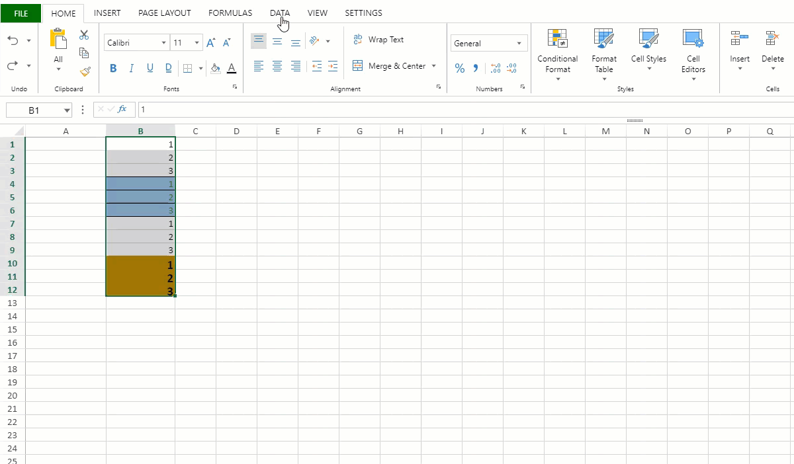
With Automatic Expansion Selection
While using remove duplicates, if you select one or more columns of the table and click on remove duplicates then the selection is expanded to select the whole table.
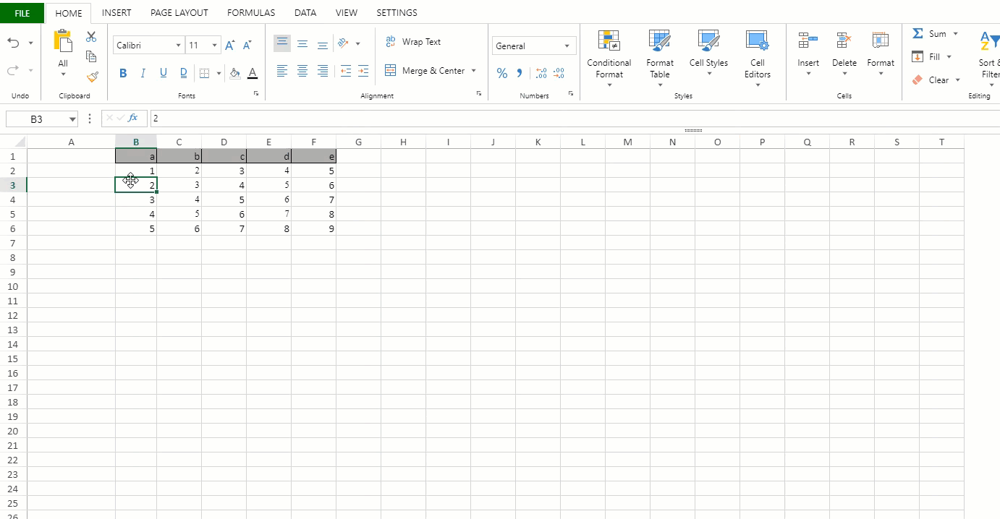
Table Row With Total
While using remove duplicates, if you select a range of cells from a table which contains a total row then the total row is ignored and duplicate values are not removed.
In the following GIF, only cells B3, B4 and B5 are selected but after clicking on "Remove Duplicates" we have two options:
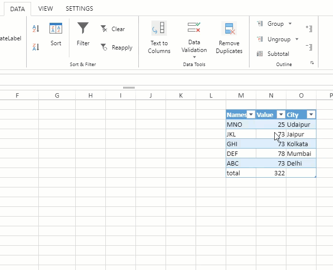
The following image shows that selecting the table cells along with other range of cells disables the "Remove Duplicates" option.
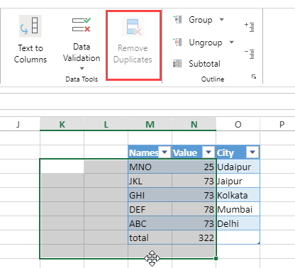
The following image shows that selecting a range of cell from a pivot table disables the "Remove Duplicates" option.
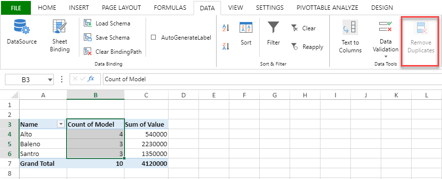
If a single row is selected.
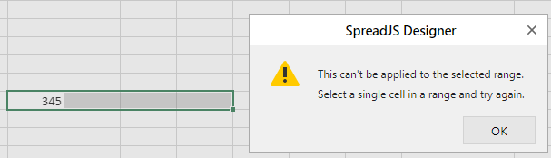
If the selection does not contain any data.
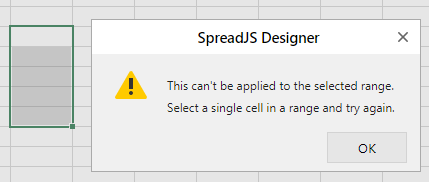
If a single cell is selected.
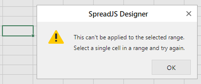
If multiple ranges are selected.
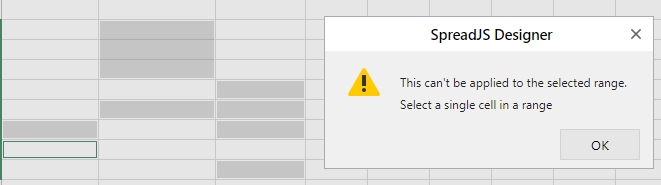